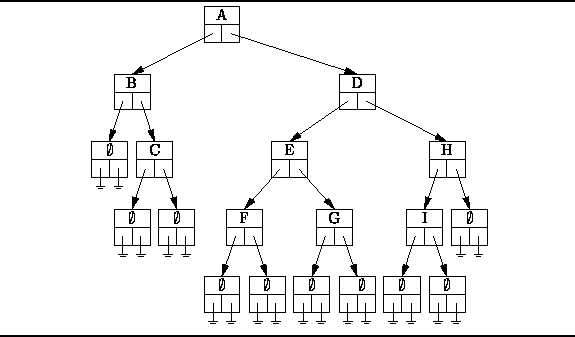
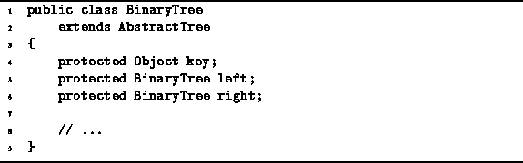

Data Structures and Algorithms
with Object-Oriented Design Patterns in Java
Data Structures and Algorithms
with Object-Oriented Design Patterns in Java
This section presents an implementation of binary trees
in the sense of Definition  .
A binary tree is essentially a N-ary tree where N=2.
Therefore, it is possible to implemented binary trees
using the NaryTree class presented in the preceding section.
However, because the NaryTree class implementation
is a general implementation which can accommodate any value of N,
it is somewhat less efficient in both time and space
than an implementation which is designed specifically for the case N=2.
Since binary trees occur quite frequently in practice,
it is important to have a good implementation.
.
A binary tree is essentially a N-ary tree where N=2.
Therefore, it is possible to implemented binary trees
using the NaryTree class presented in the preceding section.
However, because the NaryTree class implementation
is a general implementation which can accommodate any value of N,
it is somewhat less efficient in both time and space
than an implementation which is designed specifically for the case N=2.
Since binary trees occur quite frequently in practice,
it is important to have a good implementation.
Another consequence of restricting N to two is that we can talk of the left and right subtrees of a tree. Consequently the interface provided by a binary tree class is quite different from the general interface provided by an N-ary tree class.
Figure shows how the
binary tree given in Figure is be represented.
The basic idea is that each node of the tree
contains two fields that refer to the subtrees of that node.
Just as we did for N-ary trees,
we represent explicitly the empty trees.
Since an empty tree node contains neither root nor subtrees
it is represented by a structure in which all the fields are null.

Figure: Representing binary trees.
The BinaryTree class is declared in Program .
The BinaryTree class extends the AbstractTree class
introduced in Program .

Program: BinaryTree fields.
 Copyright © 1998 by Bruno R. Preiss, P.Eng. All rights reserved.
Copyright © 1998 by Bruno R. Preiss, P.Eng. All rights reserved.